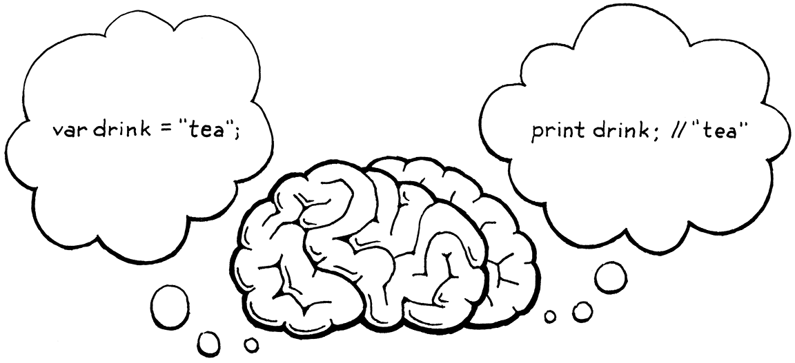
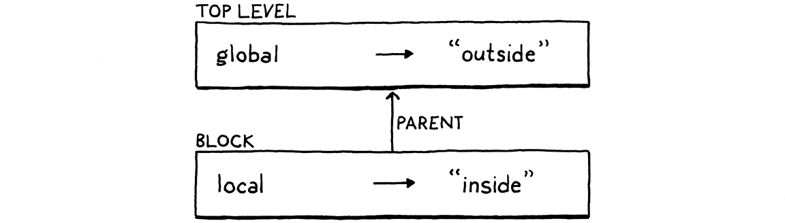

语句与状态
我这一生，心里始终渴望着一件我叫不出名字的东西。 安德烈·布勒东，《疯狂的爱》
我们目前这个解释器，感觉不太像是在给一门真正的语言编程，倒更像是在计算器上戳按钮。在我看来， 「编程」意味着用一块块小零件搭出一个系统。眼下我们还做不到，因为我们没办法把一个名字绑定到某份 数据或某个函数上。没办法引用各个零件，就没办法组合出软件。
要支持绑定，我们的解释器就得有内部状态。当你在程序开头定义一个变量、在结尾使用它时，解释器必须 在这中间一直攥着那个变量的值。所以在这一章里，我们要给解释器装上一颗大脑，它不仅会计算，还能 记住。

状态和语句是手挽手的。按定义，语句不求值出一个值，所以它们得干点别的才有用。 那个「别的」叫做副作用。它可能意味着产出用户看得见的输出，或者修改解释器里某种之后能被察觉的 状态。后者让语句特别适合用来定义变量或别的具名实体。
这一章里，上面这些我们都会做。我们会定义产出输出的语句（print）和创建状态的语句（var）。我们
会加上访问变量、给变量赋值的表达式。最后，我们还会加上块和局部作用域。要往一章里塞的东西是不少，
但我们会一口一口把它啃完。
8 . 1语句
我们先给 Lox 的文法扩展出语句。它们跟表达式差别不大。从最简单的两种开始：
-
表达式语句让你可以把一个表达式放在本该是语句的位置。它存在的意义是求值那些带副作用的 表达式。你可能没注意到它，但你在 C、Java 和其他语言里一直在用它。 只要你看到一个函数或方法调用后面跟着
;，那就是一条表达式语句。 -
print语句求值一个表达式，并把结果显示给用户。我承认，把打印直接焊进语言里、而不是 做成库函数，是有点怪。这么做是让步于一个事实：我们是一章一章地搭这个解释器，想在它做完之前 就能上手玩一玩。要是把 print 做成库函数，我们就得等到定义和调用函数的全套机械都备齐 之后，才能见证任何副作用。
新语法意味着新的文法规则。在这一章里，我们终于获得了语法解析整个 Lox 脚本的能力。既然 Lox 是一门 命令式、动态类型的语言，脚本的「顶层」就只是一串语句。新规则是：
program → statement* EOF ; statement → exprStmt | printStmt ; exprStmt → expression ";" ; printStmt → "print" expression ";" ;
第一条规则现在成了 program，它是文法的起点，代表一个完整的 Lox 脚本或一条 REPL 输入。一个程序
就是一串语句，后面跟着那个特殊的「文件结束」词法单元。这个必须有的结束词法单元确保语法解析器会
吃光全部输入，不会悄悄放过脚本末尾遗留的、出错的词法单元。
眼下，statement 只为我们描述过的两种语句准备了两个分支。本章后面和接下来的几章里，我们会往里
补更多。下一步是把这个文法变成我们能存在内存里的东西——语法树。
8 . 1 . 1语句的语法树
文法里没有任何地方同时允许表达式和语句。比如说，+ 的操作数永远是表达式，绝不会是语句。while
循环的循环体永远是一条语句。
既然这两种语法互不相交，我们就不需要一个它们全都继承的单一基类。把表达式和语句拆进各自的类层次， 能让 Java 编译器帮我们揪出像「把一条语句传给一个期望表达式的 Java 方法」这种蠢错。
这意味着要给语句加一个新的基类。跟我们的前辈一样，我们用一个神秘兮兮的名字「Stmt」。怀着极大的
远见，我早就预料到这一天，设计好了我们那个小小的 AST 元编程脚本。这
就是为什么我们把 “Expr” 当作参数传给了 defineAst()。现在我们再加一次调用，来定义 Stmt 和它的
子类。
"Unary : Token operator, Expr right"
));
在 main() 内
defineAst(outputDir, "Stmt", Arrays.asList(
"Expression : Expr expression",
"Print : Expr expression"
));
}
运行 AST 生成脚本，好好欣赏生成的 “Stmt.java” 文件——里面装着表达式语句和 print 语句所需的
语法树类。别忘了把这个文件加进你的 IDE 项目、makefile 或者随便什么东西里。
8 . 1 . 2语法解析语句
语法解析器里那个解析并返回单个表达式的 parse() 方法，是上一章为了跑起来而临时凑合的。既然我们的
文法有了正确的起始规则 program，现在可以把 parse() 变成真正的样子了。
在method parse() 内
替换 7 行
List<Stmt> parse() { List<Stmt> statements = new ArrayList<>(); while (!isAtEnd()) { statements.add(statement()); } return statements; }
它解析一连串语句，能解析多少就解析多少，直到撞上输入末尾。这是把 program 规则相当直接地翻译成
递归下降风格。由于现在用上了 ArrayList，我们还不得不向 Java 的啰嗦之神念上一句小小的祷词。
package com.craftinginterpreters.lox;
import java.util.ArrayList;
import java.util.List;
一个程序是一串语句，我们下面这个方法解析其中一条语句：
加在 expression() 之后
private Stmt statement() { if (match(PRINT)) return printStatement(); return expressionStatement(); }
有点过于骨感，但以后再往里填更多语句类型。我们看一眼当前词法单元，就能确定匹配上了哪一条具体的
语句规则。一个 print 词法单元，意思显然是 print 语句。
如果下一个词法单元看起来不属于任何已知种类的语句，我们就假定它是一条表达式语句。解析语句时，这 通常是最后兜底的那个分支，因为只凭开头的词法单元，很难主动认出那是一个表达式。
每种语句都有自己的方法。先是 print：
加在 statement() 之后
private Stmt printStatement() { Expr value = expression(); consume(SEMICOLON, "Expect ';' after value."); return new Stmt.Print(value); }
既然我们已经匹配并消费掉了那个 print 词法单元本身，这里就不必再做了。我们解析后面的表达式，
消费掉结尾的分号，然后产出语法树。
如果我们没匹配上 print 语句，那就一定是下面这种：
加在 printStatement() 之后
private Stmt expressionStatement() { Expr expr = expression(); consume(SEMICOLON, "Expect ';' after expression."); return new Stmt.Expression(expr); }
跟上一个方法类似，我们解析一个表达式，后面跟一个分号。然后把这个 Expr 裹进正确类型的 Stmt 里返回。
8 . 1 . 3执行语句
我们把前几章浓缩了一遍，一路走完前端。语法解析器现在能产出语句的语法树了，所以下一步也是最后一步， 就是解释它们。跟表达式一样，我们用访问者模式，但这次要多实现一个新的访问者接口：Stmt.Visitor， 因为语句有它们自己的基类。
我们把它加进 Interpreter 实现的那串接口里。
替换 1 行
class Interpreter implements Expr.Visitor<Object>, Stmt.Visitor<Void> {
void interpret(Expr expression) {
跟表达式不同，语句不产出值，所以这些 visit 方法的返回类型是 Void，而不是 Object。我们有两种语句 类型，每种都要一个 visit 方法。最简单的是表达式语句。
加在 evaluate() 之后
@Override public Void visitExpressionStmt(Stmt.Expression stmt) { evaluate(stmt.expression); return null; }
我们用现成的 evaluate() 方法给里层的表达式求值，然后丢弃那个值。接着
返回 null。Java 要求这样，才能满足那个特立独行、首字母大写的 Void 返回类型。怪是怪，可你又能
怎么办？
print 语句的 visit 方法差不太多。
加在 visitExpressionStmt() 之后
@Override public Void visitPrintStmt(Stmt.Print stmt) { Object value = evaluate(stmt.expression); System.out.println(stringify(value)); return null; }
在丢弃表达式的值之前，我们用上一章引入的 stringify() 方法把它转成字符串，然后倒进标准输出。
我们的解释器现在能访问语句了，但还得做点活才能把语句喂给它。首先，改造 Interpreter 类里那个旧的
interpret() 方法，让它接收一串语句——换句话说，一个程序。
在method interpret() 内
替换 8 行
void interpret(List<Stmt> statements) { try { for (Stmt statement : statements) { execute(statement); } } catch (RuntimeError error) { Lox.runtimeError(error); } }
这替换掉了原来接收单个表达式的旧代码。新代码依赖下面这个小小的辅助方法：
加在 evaluate() 之后
private void execute(Stmt stmt) { stmt.accept(this); }
它是语句版的 evaluate() 方法——我们为表达式准备的那个的对应物。既然现在要跟列表打交道，我们得
告诉 Java 一声。
package com.craftinginterpreters.lox;
import java.util.List;
class Interpreter implements Expr.Visitor<Object>,
主 Lox 类还在试图解析单个表达式并把它传给解释器。我们这样修掉那行解析代码：
Parser parser = new Parser(tokens);
在 run() 内
替换 1 行
List<Stmt> statements = parser.parse();
// 有语法错误就停下。
然后把调用解释器的那句换成这个：
if (hadError) return;
在 run() 内
替换 1 行
interpreter.interpret(statements);
}
基本上只是把新语法接过来接通而已。好，启动解释器试试。到这一步，值得在一个文本文件里随手写个小 Lox 程序，当脚本跑。像这样：
print "one"; print true; print 2 + 1;
这几乎看着像个真程序了！注意，REPL 现在也要求你输入完整的语句，而不是简单的表达式。别忘了分号。
8 . 2全局变量
既然有了语句，我们就能开始弄状态了。在钻进词法作用域那一堆复杂东西之前，先从最简单的一种变量 开始——全局变量。我们需要两个新构件。
-
一条变量声明语句把一个新变量带到世上。
var beverage = "espresso";
它创建一个新的绑定，把某个名字（这里是 “beverage”）跟某个值（这里是字符串
"espresso"） 关联起来。 -
这之后，一个变量表达式访问那个绑定。当标识符 “beverage” 被当作表达式使用时，它会查出 绑定到那个名字上的值并返回。
print beverage; // "espresso".
后面我们还会加上赋值和块作用域，但眼下这些足够开动了。
8 . 2 . 1变量的语法
跟之前一样，我们从前到后过一遍实现，从语法开始。变量声明是语句，但它们跟别的语句不一样，我们打算 把语句文法一分为二来处理它们。这是因为文法会限制某些种类的语句能出现在哪里。
控制流语句里的那些子句——想想 if 语句的 then 和 else 分支，或者 while 的循环体——每一个都是
一条单独的语句。但那条语句不允许是声明名字的那种。这样是可以的：
if (monday) print "Ugh, already?";
但这样不行：
if (monday) var beverage = "espresso";
我们大可以允许后一种，但它挺让人困惑。那个 beverage 变量的作用域是什么？它在 if 语句之后
还存在吗？如果存在，那在不是星期一的日子里它的值是什么？那些日子里这个变量到底存不存在？
这样的代码很怪，所以 C、Java 之流都不许这么写。就好像语句有两层「优先级」。 有些允许出现语句的地方——比如块内部或顶层——允许任何种类的语句，包括声明。另一些地方则只允许 「更高」优先级的语句，也就是不声明名字的那些。
为了容纳这个区分，我们为声明名字的那些语句再加一条规则。
program → declaration* EOF ; declaration → varDecl | statement ; statement → exprStmt | printStmt ;
声明语句归到新的 declaration 规则下。眼下它只有变量，但以后还会包括函数和类。任何允许出现声明的
地方也允许非声明的语句，所以 declaration 规则会兜底落到 statement。显然，你可以在脚本顶层做
声明，所以 program 改接到这条新规则上。
声明变量的规则长这样：
varDecl → "var" IDENTIFIER ( "=" expression )? ";" ;
跟大多数语句一样，它以一个领头的关键字开头。这里就是 var。然后是一个标识符词法单元，用来表示
正在声明的变量名，接着是一个可选的初始化器表达式。最后，我们给它扎上分号这个蝴蝶结。
要访问一个变量，我们定义一种新的基本表达式。
primary → "true" | "false" | "nil" | NUMBER | STRING | "(" expression ")" | IDENTIFIER ;
那条 IDENTIFIER 子句匹配单个标识符词法单元，它被理解为正在被访问的变量的名字。
这些新文法规则得到各自对应的语法树。在 AST 生成器里，我们为变量声明加一个 新语句节点。
"Expression : Expr expression",
"Print : Expr expression",
在 main() 内
在上一行末尾加 “,”
"Var : Token name, Expr initializer"
));
它存下那个名字词法单元，好让我们知道这是在声明什么，还存下初始化器表达式。（如果没有初始化器，
那个字段就是 null。）
然后我们为访问变量加一个表达式节点。
"Literal : Object value",
"Unary : Token operator, Expr right",
在 main() 内
在上一行末尾加 “,”
"Variable : Token name"
));
它不过是对变量名词法单元的一层包装。就这样。跟以往一样，别忘了 运行 AST 生成脚本，好拿到更新后的 “Expr.java” 和 “Stmt.java” 文件。
8 . 2 . 2语法解析变量
在语法解析变量语句之前，我们得挪动一下代码，给文法里新的 declaration 规则腾地方。程序顶层现在
是一串声明，所以语法解析器的入口方法变了。
List<Stmt> parse() {
List<Stmt> statements = new ArrayList<>();
while (!isAtEnd()) {
在 parse() 内
替换 1 行
statements.add(declaration());
}
return statements;
}
它调用这个新方法：
加在 expression() 之后
private Stmt declaration() { try { if (match(VAR)) return varDeclaration(); return statement(); } catch (ParseError error) { synchronize(); return null; } }
嘿，你还记得吗，早在前面那一章里，我们就把做错误恢复的基础设施搭好了。现在我们终于要 把它接通了。
这个 declaration() 方法，就是我们在块或脚本里解析一连串语句时反复调用的那个方法，所以语法解析器
进入 panic 模式时，这里正是做同步的地方。这个方法整个主体都裹在一个 try 块里，用来捕获语法解析器
开始错误恢复时抛出的异常。这样它就能回到正轨，继续试着解析下一条语句或声明的开头。
真正的语法解析发生在 try 块内部。首先，它看开头是不是 var 关键字，以此判断我们是不是处在一个
变量声明处。如果不是，就落到现有的 statement() 方法，由它去解析 print 和表达式语句。
还记得吗：要是没有别的语句匹配，statement() 会试着解析一条表达式语句？而要是它在当前词法单元处
解析不出表达式，expression() 就会报一个语法错误？这一连串调用确保了：只要没解析出一条合法的声明
或语句，我们就报错。
当语法解析器匹配上一个 var 词法单元时，它分支到这里：
加在 printStatement() 之后
private Stmt varDeclaration() { Token name = consume(IDENTIFIER, "Expect variable name."); Expr initializer = null; if (match(EQUAL)) { initializer = expression(); } consume(SEMICOLON, "Expect ';' after variable declaration."); return new Stmt.Var(name, initializer); }
跟以往一样，递归下降的代码照着文法规则走。语法解析器已经匹配过 var 词法单元了，所以接下来它要求
并消费一个标识符词法单元，作为变量名。
然后，如果它看到一个 = 词法单元，就知道有个初始化器表达式，于是解析它。否则，就把初始化器留成
null。最后，它消费掉语句末尾那个必需的分号。这一切都裹进一个 Stmt.Var 语法树节点里，我们就
齐活了。
语法解析变量表达式还要更简单。在 primary() 里，我们找一个标识符词法单元。
return new Expr.Literal(previous().literal);
}
在 primary() 内
if (match(IDENTIFIER)) {
return new Expr.Variable(previous());
}
if (match(LEFT_PAREN)) {
这样我们就有了一个能用的前端，可以声明和使用变量了。剩下的就是把它喂进解释器。在那之前，我们得 聊聊变量住在内存的哪里。
8 . 3环境
那些把变量跟值关联起来的绑定，总得存在某个地方。打从 Lisp 那群人发明括号以来，这个数据结构就一直 被叫做环境。
你可以把它想成一个映射，键是变量名，值是变量的……呃，值。事实上，我们就 是用映射在 Java 里实现它的。我们本可以把那个映射和管它的代码直接塞进 Interpreter，但它构成了一个 边界清晰的概念，所以我们把它抽出来，做成自己的一个类。
新建一个文件，加上：
新建文件
package com.craftinginterpreters.lox; import java.util.HashMap; import java.util.Map; class Environment { private final Map<String, Object> values = new HashMap<>(); }
里面有一个 Java 的 Map 用来存绑定。它的键用的是裸字符串，不是词法单元。一个词法单元代表的是源文本 里某个具体位置上的一段代码；但说到查变量时，所有同名的标识符词法单元都应该指向同一个变量（暂不考虑 作用域）。用原始字符串能确保那些词法单元全都指向同一个映射键。
我们需要支持两个操作。第一，变量定义把一个新名字绑定到一个值上。
在类 Environment 内
void define(String name, Object value) { values.put(name, value); }
算不上什么脑外科手术，但我们做了一个有意思的语义选择。往映射里加键时，我们不检查它是不是已经在了。 这意味着下面这个程序能跑：
var a = "before"; print a; // "before". var a = "after"; print a; // "after".
一条变量语句不只是定义一个新变量，它还能用来重新定义一个已有变量。我们也可以
选择把它变成错误。用户也许并不想重新定义一个已有变量。（要是他们真想，
多半会用赋值，而不是 var。）把重新定义变成错误，能帮他们揪出这个 bug。
所以，为了让两种模式保持一致，我们允许这么做——至少对全局变量是如此。一旦变量存在了，我们就需要 一种办法把它查出来。
class Environment {
private final Map<String, Object> values = new HashMap<>();
在类 Environment 内
Object get(Token name) { if (values.containsKey(name.lexeme)) { return values.get(name.lexeme); } throw new RuntimeError(name, "Undefined variable '" + name.lexeme + "'."); }
void define(String name, Object value) {
这个在语义上更有意思一点。如果找到了变量，它就简单地返回绑定到它上面的值。但要是没找到呢？又一次， 我们有几个选择：
-
把它当语法错误。
-
把它当运行时错误。
-
允许它，并返回某个默认值，比如
nil。
Lox 是挺随意的，但最后一个选项在我看来有点太宽松了。把它当语法错误——一个编译期错误——似乎是个 聪明的选择。使用未定义的变量是个 bug，错发现得越早越好。
问题在于，使用一个变量跟提及它并不是一回事。如果一块代码被裹在函数里面，你就可以提及其中 一个变量，而不必立刻对它求值。要是我们把「在变量声明之前提到它」变成静态错误，那定义递归函数就 难多了。
我们可以照顾到单个递归——一个调用自己的函数——办法是在查看它的函数体之前先声明它自己的名字。但这 对相互递归的过程（彼此互相调用）就没用了。看这个：
fun isOdd(n) { if (n == 0) return false; return isEven(n - 1); } fun isEven(n) { if (n == 0) return true; return isOdd(n - 1); }
我们查看 isOdd() 的函数体、看到它调用 isEven() 的那个时候，
isEven() 函数还没被定义。要是把这两个函数的顺序对调，那反过来，我们在看 isEven() 的函数体时，
isOdd() 又还没定义。
既然把它当静态错误会让递归声明太难办，我们就把这个错误推迟到运行时。只要你不去求值那个引用， 在变量定义之前提及它是没问题的。这样奇偶数的程序就能跑，但下面这段会得到一个运行时错误：
print a; var a = "too late!";
跟表达式求值代码里的类型错误一样，我们通过抛异常来报告运行时错误。这个异常带着变量的词法单元，这样 我们就能告诉用户，他们的代码在哪儿出了岔子。
8 . 3 . 1解释全局变量
Interpreter 类拿到一个 Environment 类的新实例。
class Interpreter implements Expr.Visitor<Object>,
Stmt.Visitor<Void> {
在类 Interpreter 内
private Environment environment = new Environment();
void interpret(List<Stmt> statements) {
我们把它直接存成 Interpreter 里的一个字段，这样只要解释器还在跑，那些变量就一直留在内存里。
我们有两棵新语法树，所以有两个新的 visit 方法。第一个是给声明语句的。
加在 visitPrintStmt() 之后
@Override public Void visitVarStmt(Stmt.Var stmt) { Object value = null; if (stmt.initializer != null) { value = evaluate(stmt.initializer); } environment.define(stmt.name.lexeme, value); return null; }
如果变量有初始化器，我们就给它求值。如果没有，我们又要做一个选择。我们本可以在语法解析器里要求 必须有初始化器，把它变成语法错误。但大多数语言不这么做，所以对 Lox 来说，这么做感觉有点苛刻。
我们也可以把它变成运行时错误。那样就允许你定义未初始化的变量，但要是你在给它赋值之前访问它，就会
发生运行时错误。这主意不坏，但大多数动态类型语言不这么做。那我们还是保持简单：Lox 规定，如果没被
显式初始化，变量就设为 nil。
var a; print a; // "nil".
因此，如果没有初始化器，我们就把值设成 null，它是 Lox 的 nil 值在 Java 里的表示。然后我们让
环境把这个变量绑定到那个值上。
接下来，我们求值一个变量表达式。
加在 visitUnaryExpr() 之后
@Override public Object visitVariableExpr(Expr.Variable expr) { return environment.get(expr.name); }
它只是转发给环境，由环境做那些繁重的活，确保变量是定义过的。这下，我们有了一套初级可用的变量。 试试这个：
var a = 1; var b = 2; print a + b;
我们还不能复用代码，但可以开始搭出复用数据的程序了。
8 . 4赋值
你完全可以造一门有变量、却不让你重新赋值——也就是修改——它们的语言。Haskell 就是一个例子。
SML 只支持可变的引用和数组——变量本身不能被重新赋值。Rust 用「要求加 mut 修饰符才能赋值」的
方式，把你从修改这件事上劝开。
修改变量是一种副作用，而这名字也暗示了，有些语言圈的人觉得副作用脏、不优雅。 代码应该是产出值的纯粹数学——清澈、恒定，像一场神圣的创造。而不是某个邋里邋遢的自动机，一次一下 命令式的哼哼，把一团团数据捶打成形。
Lox 可没那么清高。Lox 是一门命令式语言，修改是它自带的。加几行代码支持赋值算不上什么大活。全局 变量本来就支持重新定义，所以大部分机器已经就位了。主要缺的是一个显式的赋值写法。
8 . 4 . 1赋值语法
那个小小的 = 语法比它看起来要复杂。跟大多数从 C 派生的语言一样，赋值是一个
表达式，不是语句。也跟 C 一样，它是优先级最低的表达式形式。这意味着这条规则插在 expression
和 equality（次低优先级的表达式）之间。
expression → assignment ; assignment → IDENTIFIER "=" assignment | equality ;
这条规则说的是：一个 assignment 要么是一个标识符后面跟着 = 和一个表示值的表达式，要么是一个
equality（进而是任何别的）表达式。以后等我们给对象加上属性设置器，assignment 还会变得更复杂，
像这样：
instance.field = "value";
简单的那部分，是加上那个新语法树节点。
defineAst(outputDir, "Expr", Arrays.asList(
在 main() 内
"Assign : Token name, Expr value",
"Binary : Expr left, Token operator, Expr right",
它有一个词法单元，表示被赋值的变量；还有一个表达式，表示新值。等你跑完 AstGenerator 拿到新的
Expr.Assign 类之后，把语法解析器里现有的 expression() 方法体换掉，好跟更新后的规则对上。
private Expr expression() {
在 expression() 内
替换 1 行
return assignment();
}
麻烦就麻烦在这儿。一个只有单 token 前瞻的递归下降语法解析器，在走完左侧、一头撞上 = 之前，
是看不到足够远、判断不出自己正在解析一个赋值的。你可能会问，它为什么需要知道？毕竟，我们在解析完
左操作数之前，也不知道自己正在解析一个 + 表达式啊。
区别在于，赋值的左侧不是一个求值出某个值的表达式。它是一种伪表达式，求值出的是一个你可以往里赋值的 「东西」。想想这个：
var a = "before"; a = "value";
在第二行，我们并不求值 a（那样会得到字符串 “before”）。我们搞清楚变量 a 指的是什么，这样
才知道该把右侧表达式的值存到哪儿。这两种构件的经典叫法是
左值和右值。我们迄今为止见过的、产出值的表达式全是右值。左值「求值」出的是一处存储位置，
你可以往里面赋值。
我们希望语法树能反映出：左值不像普通表达式那样被求值。这就是为什么 Expr.Assign 节点为左侧存的
是一个 Token，而不是一个 Expr。问题在于，语法解析器在撞上 = 之前，并不知道自己正在解析一个
左值。在一个复杂的左值里，那个 = 可能出现在很多个词法单元之后。
makeList().head.next = node;
我们只有单 token 前瞻，那怎么办？我们用一个小花招，它长这样：
加在 expressionStatement() 之后
private Expr assignment() { Expr expr = equality(); if (match(EQUAL)) { Token equals = previous(); Expr value = assignment(); if (expr instanceof Expr.Variable) { Token name = ((Expr.Variable)expr).name; return new Expr.Assign(name, value); } error(equals, "Invalid assignment target."); } return expr; }
解析一个赋值表达式的大部分代码，看着跟解析 + 之类的其他二元运算符差不多。我们解析左侧，它可以是
任何更高优先级的表达式。如果我们发现一个 =，就解析右侧，然后把这一切裹进一个赋值表达式语法树
节点里。
跟二元运算符有一点小小的不同：我们不会循环着去累积一串同样的运算符。因为赋值是右结合的，我们改成
递归调用 assignment() 来解析右侧。
花招在于：在创建赋值表达式节点之前，我们看一眼左侧那个表达式，弄清楚它是哪种赋值目标。我们把那个 右值表达式节点转换成一个左值的表示。
之所以能这么转，是因为结果证明：每一个合法的赋值目标，恰好也都是合法的普通 表达式语法。考虑一个 复杂的属性赋值，像这样：
newPoint(x + 2, 0).y = 3;
这个赋值表达式的左侧，同时也是合法的表达式。
newPoint(x + 2, 0).y;
第一个例子设置那个字段，第二个读取它。
这意味着我们可以把左侧当作一个表达式来解析，事后再产出语法树，把它变成一个赋值目标。如果左侧 表达式不是一个合法的赋值目标，我们就以一个语法错误失败。这就确保了我们 能对下面这种代码报错：
a + b = c;
眼下，唯一合法的赋值目标就是一个简单的变量表达式，但以后我们会加上字段。这个花招的最终产物是一个 赋值表达式语法树节点：它知道自己正在给什么赋值，并且有一个表达式子树表示被赋的那个值。所有这些， 只需要单 token 前瞻，且不回溯。
8 . 4 . 2赋值的语义
我们有了一个新语法树节点，所以解释器也就有了一个新的 visit 方法。
加在 visitVarStmt() 之后
@Override public Object visitAssignExpr(Expr.Assign expr) { Object value = evaluate(expr.value); environment.assign(expr.name, value); return value; }
出于显而易见的原因，它跟变量声明很像。它给右侧求值拿到那个值，然后把它存进那个具名变量里。它调用的
是 Environment 上这个新方法，而不是 define()：
加在 get() 之后
void assign(Token name, Object value) { if (values.containsKey(name.lexeme)) { values.put(name.lexeme, value); return; } throw new RuntimeError(name, "Undefined variable '" + name.lexeme + "'."); }
赋值跟定义的关键区别在于，赋值不被允许创建一个新变量。在我们的实现里，这就意味着：如果那个键在环境的变量映射里还不存在，这就是一个运行时错误。
这个 visit() 方法做的最后一件事，就是返回被赋的那个值。这是因为赋值是一个表达式，可以嵌套在别的
表达式里，像这样：
var a = 1; print a = 2; // "2".
这下我们的解释器能创建、读取、修改变量了。水平大概跟早期的 BASIC 差不多。 全局变量很简单，但当程序里随便两块代码都能意外踩到彼此的状态时，写一个大型程序就没啥乐趣了。我们 想要局部变量，也就是说，该请出作用域了。
8 . 5作用域
一个作用域定义了一片区域，在那里一个名字映射到某个特定的实体。多个作用域让同一个名字能在不同的 上下文里指代不同的东西。在我家里，「鲍勃」通常指的是我。但也许在你那座城里，你认识另一个鲍勃。 同一个名字，说的地方不同，对应的人就不同。
词法作用域（或者那个不那么常听到的静态作用域）是一种特定的作用域 风格，程序文本本身就显示了作用域从哪里开始、到哪里结束。在 Lox 里，跟大多数现代语言一样，变量是 词法作用域的。当你看到某个使用变量的表达式时，只要静态地阅读代码，就能弄清楚它指的是哪一次变量 声明。
举个例子：
{
var a = "first";
print a; // "first".
}
{
var a = "second";
print a; // "second".
}
这里有两个块，各自声明了一个变量 a。你我只要看一眼代码就能说出来，第一条 print 语句里用到的
a 指的是第一个 a，第二条指的就是第二个。
这跟动态作用域形成对比——在动态作用域里，直到你执行代码才知道一个名字指的是什么。Lox 没有 动态作用域的变量，但对象上的方法和字段是动态作用域的。
class Saxophone { play() { print "Careless Whisper"; } } class GolfClub { play() { print "Fore!"; } } fun playIt(thing) { thing.play(); }
当 playIt() 调用 thing.play() 时，我们不知道即将听到的是「Careless Whisper」还是「Fore!」。
这取决于你传给函数的是萨克斯还是高尔夫球杆，而这件事要到运行时才知道。
作用域和环境是一对近亲。前者是理论概念，后者是实现它的机器。当我们的解释器在代码里穿行时，那些 影响作用域的语法树节点会改变环境。在 Lox 这种偏 C 的语法里，作用域是由花括号块控制的。（所以我们 管它叫块作用域。）
{
var a = "in block";
}
print a; // Error! No more "a".
一个块的开始引入一个新的局部作用域，而当执行越过那个收尾的 } 时，这个作用域就结束了。块内声明的
任何变量都消失不见。
8 . 5 . 1嵌套与遮蔽
实现块作用域的第一版草稿大概是这样的：
-
在我们访问块内每一条语句时，记下所有被声明的变量。
-
在最后一条语句执行完之后，告诉环境把那些变量全都删掉。
对前面那个例子来说，这能行。但记住，局部作用域的动机之一就是封装——程序某个角落里的一块代码，不该 去干扰别的某一块。看看这个：
// How loud? var volume = 11; // Silence. volume = 0; // Calculate size of 3x4x5 cuboid. { var volume = 3 * 4 * 5; print volume; }
看看那个块，我们用 volume 的一个局部声明来计算长方体的体积。块退出之后，解释器会把那个全局
volume 变量删掉。这可不对。退出块时，我们应该移除块内声明的任何变量，但如果块外声明了一个同名的
变量，那是另一个变量。它不该被碰。
当一个局部变量跟某个外围作用域里的变量同名时，它会遮蔽那个外层变量。块内的代码再也看不见它了 ——它藏在内层变量投下的「阴影」里——但它还在那儿。
当我们进入一个新的块作用域时，需要保住那些在外层作用域里定义的变量，好让它们在退出内层块之后依然 还在。为此，我们给每个块定义一个全新的环境，里面只装着在这个作用域里定义的变量。退出块时，我们丢掉 它的环境，恢复上一个。
我们还需要处理那些没有被遮蔽的外围变量。
var global = "outside"; { var local = "inside"; print global + local; }
这里，global 住在外面那个全局环境里，而 local 定义在块自己的环境里。在那条 print 语句里，
这两个变量都在作用域内。为了找到它们，解释器不仅得搜当前最内层的环境，还得搜任何外围环境。
我们通过把环境串联起来的办法实现这一点。每个环境都有一个指向紧邻的外围 作用域环境的引用。当我们查找一个变量时，就沿着这条链从最内层往外走，直到找到那个变量。从内层作用域 开始，正是我们让局部变量遮蔽外层变量的方式。

在把块语法加进文法之前，我们要先给 Environment 类补上对这种嵌套的支持。首先，我们给每个环境一个 指向它外围环境的引用。
class Environment {
在类 Environment 内
final Environment enclosing;
private final Map<String, Object> values = new HashMap<>();
这个字段需要初始化，所以我们加上一对构造函数。
在类 Environment 内
Environment() { enclosing = null; } Environment(Environment enclosing) { this.enclosing = enclosing; }
那个无参构造函数是给全局作用域的环境用的，它是链的末端。另一个构造函数则创建一个新的局部作用域， 嵌套在给定的那个外层作用域里。
我们不必去动 define() 方法——一个新变量总是声明在当前最内层的作用域里。但变量查找和赋值要跟已有
变量打交道，它们需要沿着链走才能找到变量。先是查找：
return values.get(name.lexeme);
}
在 get() 内
if (enclosing != null) return enclosing.get(name);
throw new RuntimeError(name,
"Undefined variable '" + name.lexeme + "'.");
如果这个环境里没找到变量，我们就干脆去试试外围环境。外围环境又递归地做 同样的事，所以最终会走完整条链。如果我们到了一个没有外围环境的环境、却仍然没找到那个变量，那就放弃， 照旧报一个错误。
赋值也是同样的走法。
values.put(name.lexeme, value);
return;
}
在 assign() 内
if (enclosing != null) { enclosing.assign(name, value); return; }
throw new RuntimeError(name,
同样，如果变量不在这个环境里，它就递归地去检查外围环境。
8 . 5 . 2块的语法与语义
既然环境能嵌套了，我们就准备好给语言加上块了。瞧这文法：
statement → exprStmt | printStmt | block ; block → "{" declaration* "}" ;
一个块是一串（可能为空的）语句或声明，被花括号围起来。块本身也是一条语句，可以出现在任何允许语句的 地方。语法树节点长这样：
defineAst(outputDir, "Stmt", Arrays.asList(
在 main() 内
"Block : List<Stmt> statements",
"Expression : Expr expression",
它持有块内语句的列表。解析很直白。跟其他语句一样，我们靠领头的
词法单元来侦测一个块的开始——这里就是那个 {。在 statement() 方法里，我们加上：
if (match(PRINT)) return printStatement();
在 statement() 内
if (match(LEFT_BRACE)) return new Stmt.Block(block());
return expressionStatement();
真正的工作都发生在下面这里：
加在 expressionStatement() 之后
private List<Stmt> block() { List<Stmt> statements = new ArrayList<>(); while (!check(RIGHT_BRACE) && !isAtEnd()) { statements.add(declaration()); } consume(RIGHT_BRACE, "Expect '}' after block."); return statements; }
我们创建一个空列表，然后不断解析语句、把它们加进列表，直到到达块的末尾
——由收尾的 } 标记。注意那个循环还显式检查了 isAtEnd()。哪怕是在解析非法代码，我们也得小心别
陷入死循环。如果用户忘了收尾的 }，语法解析器不能卡住。
语法到这儿就完了。至于语义，我们给 Interpreter 再加一个 visit 方法。
加在 execute() 之后
@Override public Void visitBlockStmt(Stmt.Block stmt) { executeBlock(stmt.statements, new Environment(environment)); return null; }
要执行一个块，我们为这个块的作用域创建一个新环境，然后把它交给另一个方法：
加在 execute() 之后
void executeBlock(List<Stmt> statements, Environment environment) { Environment previous = this.environment; try { this.environment = environment; for (Stmt statement : statements) { execute(statement); } } finally { this.environment = previous; } }
这个新方法在给定的环境上下文里执行一串语句。到现在为止，Interpreter 里的
environment 字段一直指向同一个环境——那个全局的。现在，这个字段代表的是当前环境。也就是那个
跟待执行代码所在的最内层作用域相对应的环境。
要在一个给定的作用域里执行代码，这个方法会更新解释器的 environment 字段，访问所有语句，然后恢复
先前的值。本着 Java 里一以贯之的好习惯，它用一个 finally 子句来恢复先前的环境。这样一来，就算抛出
了异常，环境也能被恢复回去。
出乎意料的是，要完全支持局部变量、嵌套和遮蔽，我们要做的就这么多。去试试这个：
var a = "global a"; var b = "global b"; var c = "global c"; { var a = "outer a"; var b = "outer b"; { var a = "inner a"; print a; print b; print c; } print a; print b; print c; } print a; print b; print c;
我们这个小小的解释器现在能记住东西了。我们正一步步逼近某种像样的、功能齐全的编程语言。
习题
-
REPL 不再支持输入单个表达式、然后自动打印它的结果值了。这挺烦人的。给 REPL 加上支持，让用户既能 输入语句、也能输入表达式。如果他们输入的是语句，就执行它。如果他们输入的是表达式，就求值它、并 显示结果值。
-
也许你想让 Lox 在变量初始化这件事上更明确一点。与其隐式地把变量初始化成
nil，不如把「访问一个 既没被初始化、也没被赋过值的变量」变成运行时错误，就像这样：// No initializers. var a; var b; a = "assigned"; print a; // OK, was assigned first. print b; // Error!
-
下面这个程序做了什么？
var a = 1; { var a = a + 2; print a; }
你期望它做什么？它做的符合你认为它该做的吗？在你熟悉的其他语言里，类似的代码会做什么？你觉得 用户期望它做什么？
设计说明：隐式变量声明
Lox 把「声明一个新变量」和「给已有变量赋值」区分成了两套不同的语法。有些语言把这两者合并成只有赋值 一种语法。给一个不存在的变量赋值，会自动把它带到世上。这叫做隐式变量声明，Python、Ruby 和 CoffeeScript 等语言都有。JavaScript 有显式的语法来声明变量，但也能在赋值时创建新变量。Visual Basic 有一个开关来启用或禁用隐式变量。
当同一种语法既能赋值又能创建变量时，每种语言都必须在「用户意图不明确」的时候决定该怎么办。具体来说， 每种语言都得选定：隐式声明如何跟遮蔽互动，以及一个被隐式声明的变量落进哪个作用域。
-
在 Python 里，赋值总是在当前函数的作用域里创建一个变量，哪怕函数外面声明了一个同名的变量。
-
Ruby 靠给局部变量和全局变量定不同的命名规则，避开了一部分歧义。不过，Ruby 里的块（它更像闭包， 而不是 C 里的「块」）有它自己的作用域，所以这个问题依然存在。Ruby 里赋值时，如果当前块外部存在 一个同名变量，它就赋值给那个变量。否则，它就在当前块的作用域里创建一个新变量。
-
CoffeeScript 在很多方面沿袭了 Ruby，做法也类似。它明确地不允许遮蔽：规定赋值永远赋给外层作用域 里的变量（只要存在这么一个），一路向上直到最外层的全局作用域。否则，它就在当前函数作用域里创建 那个变量。
-
在 JavaScript 里，赋值如果能在任何外围作用域里找到已存在的变量，就修改它。如果找不到，它就隐式地 在全局作用域里创建一个新变量。
隐式声明的主要好处是简单。语法更少，也没有「声明」这个概念要学。用户只管开始赋值，语言自己去弄明白。
像 C 这样更老的、静态类型的语言，则受益于显式声明，因为它给用户一处地方，去告诉编译器每个变量是什么 类型、要给它分配多少存储空间。在一门动态类型、有垃圾回收的语言里，这其实并不是必需的，所以你可以 把声明做成隐式的。这感觉更「脚本范儿」一点，更「你懂我意思」。
但这是个好主意吗？隐式声明有一些问题。
-
用户本意可能是给一个已有变量赋值，但把名字拼错了。解释器不知道这一点，于是就闷头静悄悄地创建了 某个新变量，而用户想赋值的那个变量还是老值。在 JavaScript 里这事格外恶劣：一个拼写错误会创建 一个全局变量，进而可能干扰别的代码。
-
JS、Ruby 和 CoffeeScript 靠「是否已存在一个同名变量——哪怕在外层作用域里」来判断一次赋值是创建 新变量还是赋给已有变量。这意味着在某个外围作用域里加一个新变量，可能改变已有代码的含义。原本是 局部变量的东西，可能无声无息地变成对外层那个新变量的赋值。
-
在 Python 里，你可能想给当前函数外面的某个变量赋值，而不是在当前函数里创建一个新变量，但你 做不到。
随着时间推移，我所知道的那些有隐式变量声明的语言，最终都加上了更多特性和复杂度来处理这些问题。
-
今天，JavaScript 里全局变量的隐式声明被普遍视为一个错误。「严格模式」禁用了它，把它变成编译错误。
-
Python 加了一条
global语句，让你能从函数内部显式地给全局变量赋值。后来，随着函数式编程和嵌套 函数越来越流行，他们又加了一条类似的nonlocal语句，用来给外围函数里的变量赋值。 -
Ruby 扩展了它的块语法，允许把某些变量显式声明为块局部的，哪怕外层作用域里存在同名变量。
考虑到这些，我认为「简单」这个论据基本已经站不住脚了。有一种说法是，隐式声明是正确的默认，但我个人 觉得那不太有说服力。
我的看法是，隐式声明在很多年前是说得通的，那时候大多数脚本语言高度命令式、代码相当扁平。随着程序员 对深度嵌套、函数式编程和闭包越来越习惯，想要访问外层作用域变量的情况变得越来越普遍。这就让用户更容易 撞上那些棘手的情形：分不清他们到底是打算让这次赋值创建一个新变量，还是复用一个外围的变量。
所以我更偏爱显式声明变量，这也是 Lox 要求这么做的原因。